Bab 13 dari 27
Katalog, Kategori, dan Cetak Desain
13.1 Katalog layanan
Menu Katalog Layanan berisi produk/layanan yang dijual.
- Tambah produk: nama, kategori, tipe harga, harga dasar, satuan, dan deskripsi.
- Atur produk aktif/nonaktif agar tidak muncul di order.
- Hubungkan produk dengan stok bahan bila perlu.
- Gunakan gambar produk agar katalog publik menarik.

Alur CRUD katalog layanan
Lihat daftar — Menu Katalog Layanan menampilkan ringkasan total layanan, tipe harga, dan tabel produk.

Gambar 13.2 — Daftar katalog layanan sebelum perubahan. Tambah layanan — Klik Layanan Baru. Panel Pengaturan Detail Layanan terbuka.
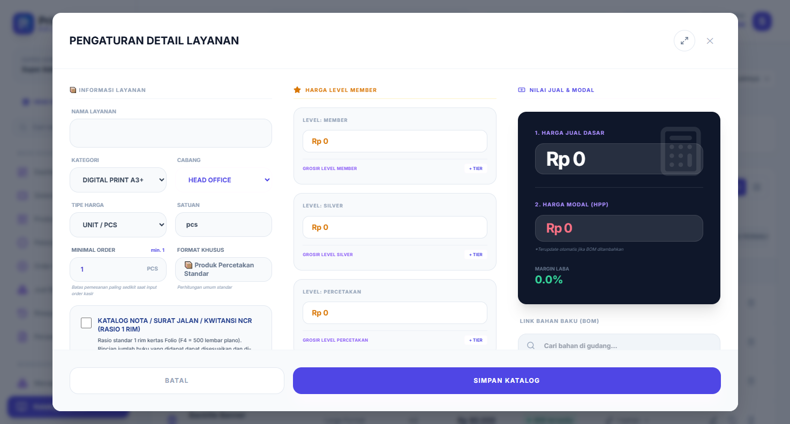
Gambar 13.3 — Panel pengaturan detail layanan yang masih kosong. Isi detail — Masukkan nama layanan, pilih kategori, tipe harga, satuan, lalu isi Harga Jual Dasar.
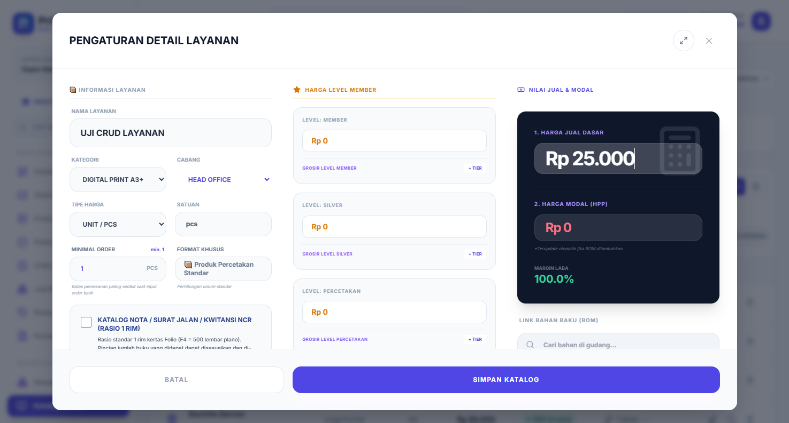
Gambar 13.4 — Data layanan baru yang sudah diisi. Simpan dan verifikasi — Klik Simpan Katalog. Layanan baru muncul di tabel; gunakan kolom pencarian untuk menemukannya.
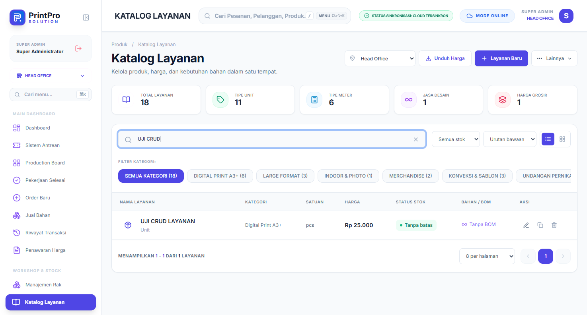
Gambar 13.5 — Layanan baru tampil pada daftar hasil pencarian. Baca detail — Klik tombol panah pada kolom Bahan / BOM untuk melihat bahan yang tertaut, atau lihat ringkasan kategori, satuan, harga, dan status stok langsung pada baris.
Ubah layanan — Klik ikon pensil pada baris layanan. Ubah data yang diperlukan, misalnya nama dan harga.
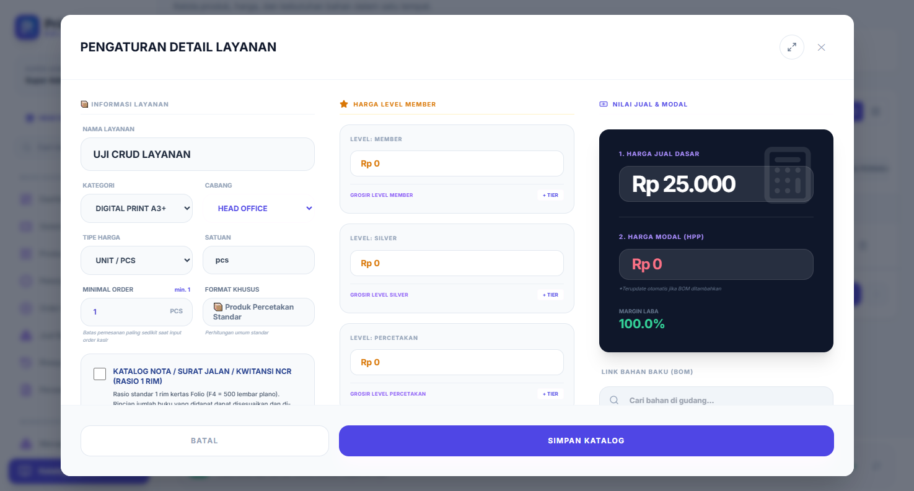
Gambar 13.6 — Panel edit layanan yang sudah terisi data sebelumnya. Verifikasi perubahan — Setelah disimpan, nama dan harga baru langsung tampil di daftar.
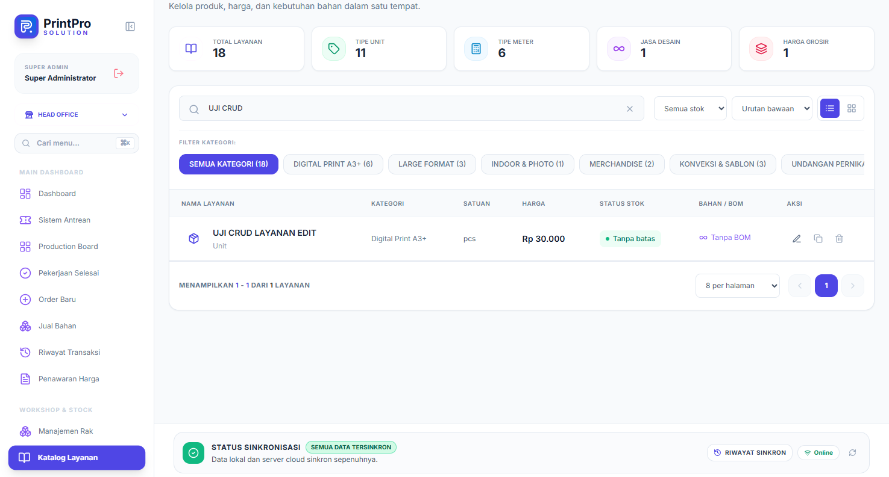
Gambar 13.7 — Nama dan harga layanan yang sudah diperbarui. Hapus layanan — Klik ikon tempat sampah, lalu konfirmasi pada dialog Hapus Layanan/Katalog? dengan menekan Ya, Hapus.
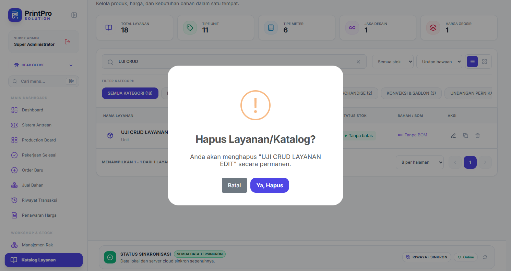
Gambar 13.8 — Konfirmasi penghapusan layanan secara permanen. Verifikasi penghapusan — Muat ulang halaman bila daftar belum berubah. Total layanan kembali berkurang dan data uji tidak lagi ditemukan.
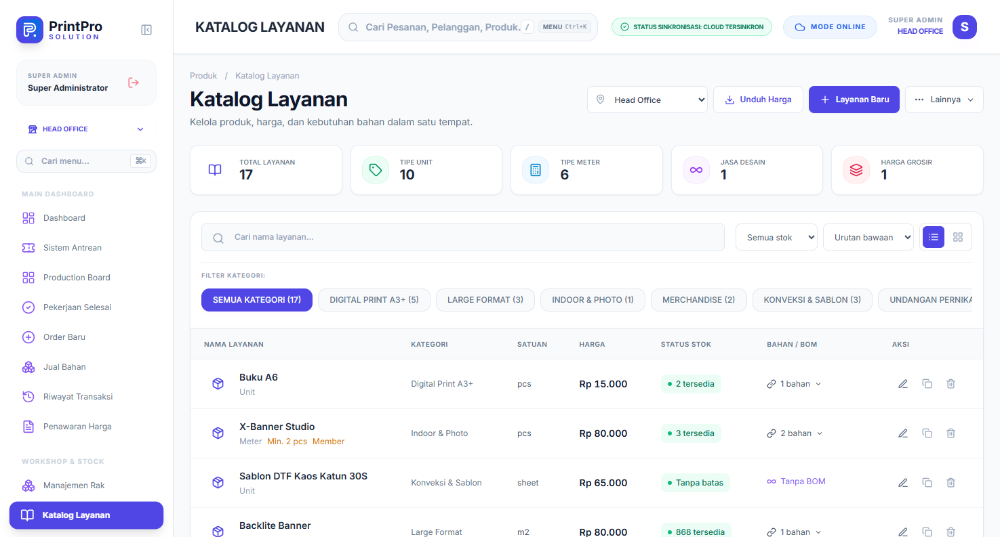
Gambar 13.9 — Daftar layanan setelah data uji dihapus (total kembali 17).
Catatan: Gunakan tombol Clone pada baris layanan untuk menyalin layanan ke cabang lain tanpa membuat ulang data dari awal.
13.2 Kategori produk
Kategori membantu pencarian dan laporan. Buat kategori yang tidak tumpang tindih, misalnya:
- Cetak Digital
- Offset
- Banner & Spanduk
- Merchandise
- Buku
- Undangan
Alur CRUD kategori produk
Lihat daftar — Menu Kategori Produk menampilkan kartu kategori beserta deskripsi dan tombol Edit/Hapus.
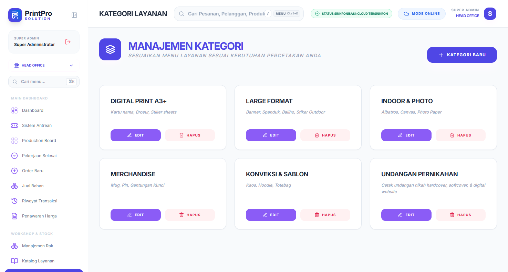
Gambar 13.10 — Daftar kategori layanan sebelum perubahan. Tambah kategori — Klik Kategori Baru untuk membuka formulir di bagian bawah halaman.
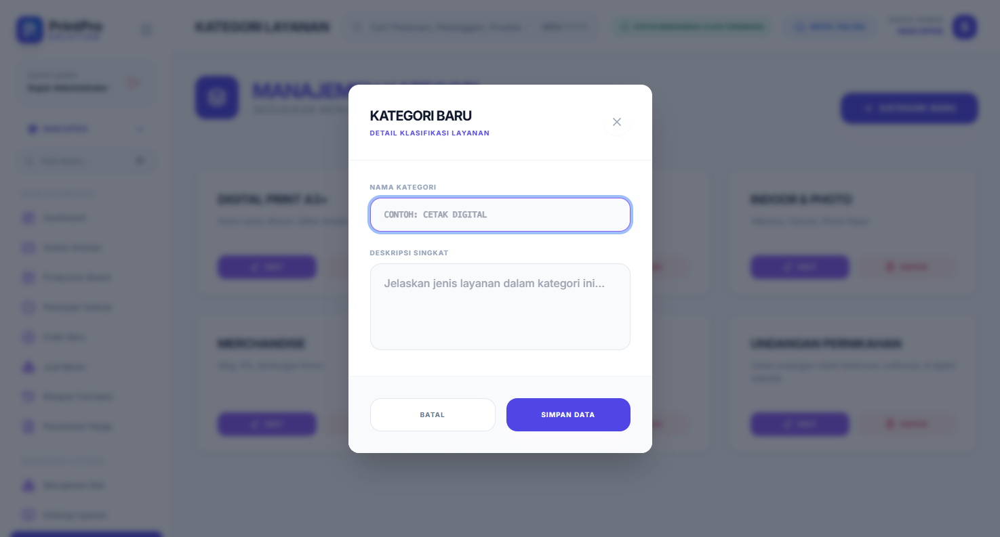
Gambar 13.11 — Formulir kategori baru yang masih kosong. Isi data — Masukkan nama kategori dan deskripsi singkat, lalu klik Simpan Data.
Gambar 13.12 — Formulir yang sudah diisi dengan data kategori baru. Verifikasi hasil — Kartu kategori baru langsung tampil di daftar.
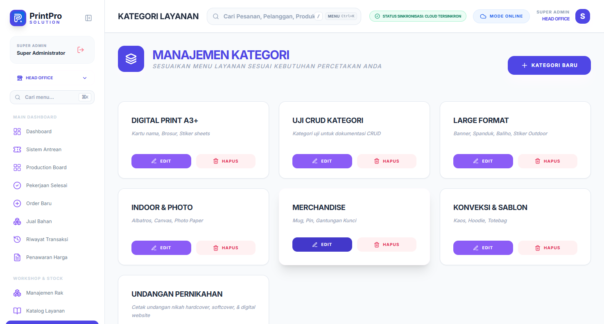
Gambar 13.13 — Kategori baru tampil pada daftar. Ubah kategori — Klik Edit pada kartu kategori. Formulir Edit Kategori terisi data sebelumnya.
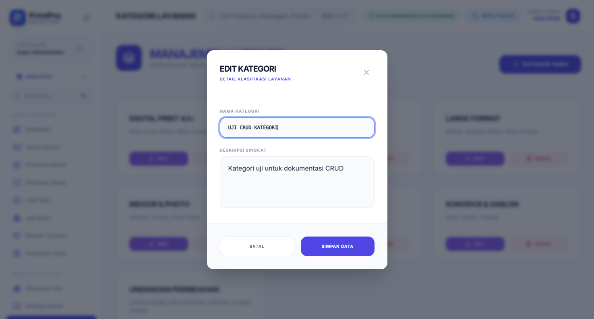
Gambar 13.14 — Formulir edit kategori. Simpan perubahan — Perbarui nama/deskripsi, klik Simpan Data, lalu pastikan kartu sudah berubah.
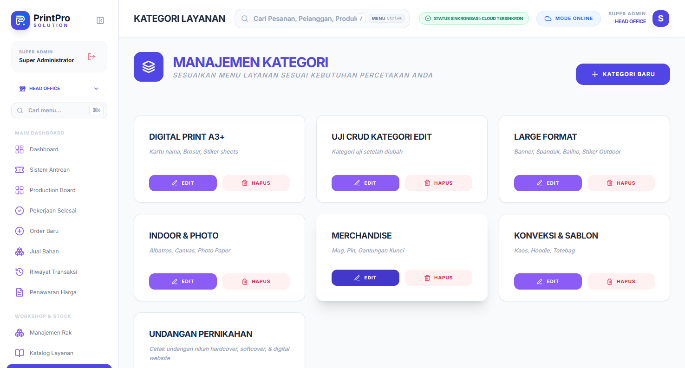
Gambar 13.15 — Nama dan deskripsi kategori yang sudah diperbarui. Hapus kategori — Klik Hapus, lalu konfirmasi pada dialog Hapus Kategori? dengan menekan Ya, Hapus.
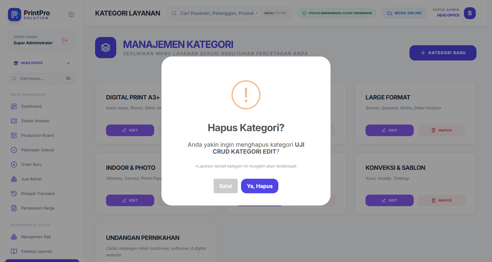
Gambar 13.16 — Konfirmasi penghapusan kategori. Verifikasi penghapusan — Kartu kategori hilang dari daftar setelah halaman dimuat ulang.

Gambar 13.17 — Daftar kategori setelah data uji dihapus.
Catatan: Menghapus kategori dapat memengaruhi layanan yang memakainya. Pindahkan layanan ke kategori lain terlebih dahulu bila diperlukan.
13.3 Layout nota (Print Designer)
Menu Layout Nota mengatur tampilan struk/invoice:
- Logo, nama toko, alamat, dan kontak.
- Ukuran kertas (58 mm, 80 mm, A4/A5).
- Elemen yang ditampilkan (NPWP, QR, catatan kaki, tanda tangan).
- Uji cetak setelah mengubah layout.
13.4 File galeri
Menu File Galeri menyimpan file desain/aset. Gunakan penamaan yang konsisten, misalnya INV-2026-0001-desain-final.pdf. Hapus file lama secara berkala agar penyimpanan tidak penuh.